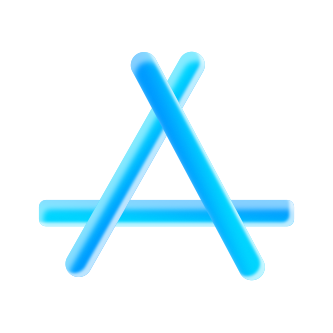

🌍
A.D. 2026
令和
Reiwa
SCRUB
A.D. 2026
令和
Reiwa
✕
--°C
↵ で移動
3D
0
📍
⟳
TimeMachine
✕
英検 Pre-1 を解く
▲
1 / 1
▼
📌 保存済みの場所
✕
通知をオンにしよう👀
新着メッセージや既読をすぐ受け取れます。
🔔
通知をオンに。
👀
見たよ通知
既読を相手に知らせる
ありがとう、もう一歩。
→
ようこそ
使い始めてくれてありがとう🔥
→を押して、始めよう。
→
友達コードをコピー
😃
User
友達と繋がろう
クリックしてリンクをコピー
📷 読み取る
QR
→
←
Chat
✕
→
メッセージを送信できません
この会話を削除
📍
←
📎


×
🙂
User
🌐 アカウント一覧
🔑 パスキー作成
📣 一斉送信
送信
削除するには「—」と入力。
どこかをタップで閉じる
スライドで削除
スライドで削除（元に戻せません・保存で復活）
アカウント一覧
☑
🗺️
✕
🗑 選択を削除
🧹 旧meettomeetを削除
🗑 全て削除
Sさん
繋がる
拒否る
管理者ログイン
パスワードを入力するか、管理者パスキーで入ります
キャンセル
管理者になる
🔑 管理者パスキーでログイン
ホーム画面に追加しよう
✕
—
🎂 —
話す
📎
🗺️
✕
🙂
User
この QR を相手に読み取ってもらおう
📷 QRで追加
🔗 リンク
⚙︎ 設定
✕
QRで追加
相手の QR コードを枠に合わせてね
振って友達を削除
もう一度登録し直すまで話せません
タップでキャンセル
友達
ありがとうございました
ホームに追加してね
わかった